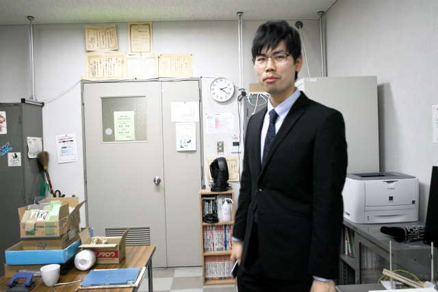
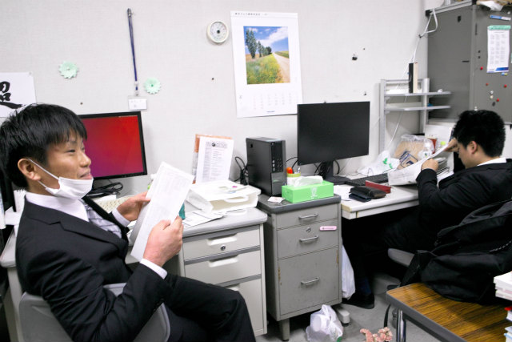
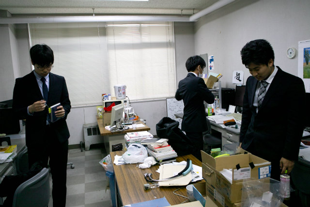

去年は修士5人進学でしたが，今年はいろいろ減って3人です．4人以上いると研究でも就活でも良い感じなのですが．その分，全力（アクセントは前）でいきたいところです．
N谷くんはHくんの机です

T田くんはY岡くんの机
単位認定しにいこう
T中くんはKくんの机
自分で学務にいかないとダメな単位
学務課へ移動
| ・ 入学宣誓式 (H30.04.05) | |||
去年は修士5人進学でしたが，今年はいろいろ減って3人です．4人以上いると研究でも就活でも良い感じなのですが．その分，全力（アクセントは前）でいきたいところです． |
|||
|
N谷くんはHくんの机です |
T田くんはY岡くんの机 | ||
|
単位認定しにいこう |

T中くんはKくんの机 | ||
|

自分で学務にいかないとダメな単位 |

学務課へ移動 | ||